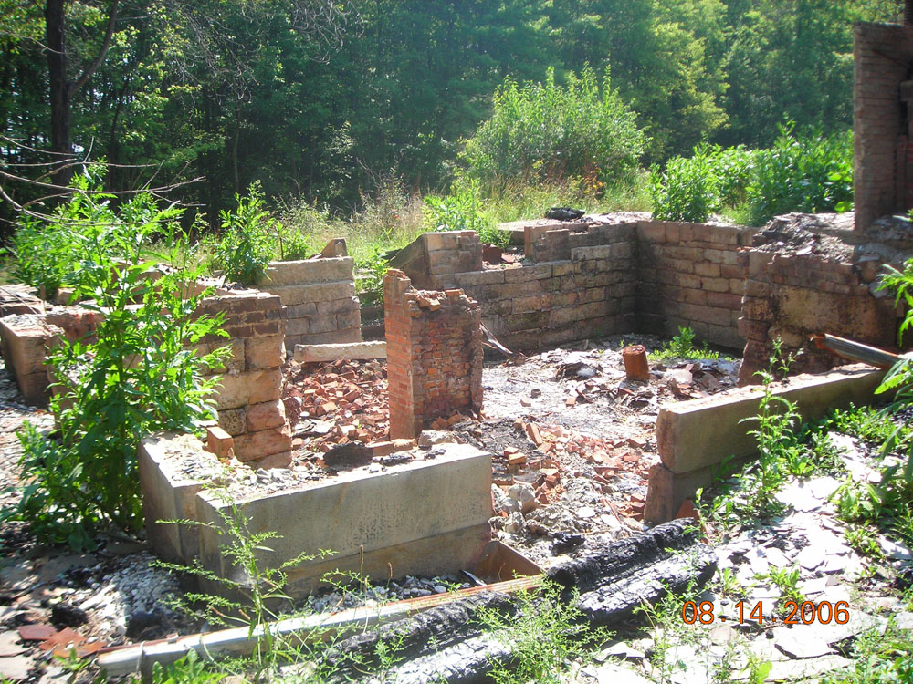

The Kenneth Biros Murder House
A very true murder story is the source of this Trumbull County ghost story, which centers around a house located at 5956 Kings Graves Road in Vienna Center.
According to court records, this is what happened on the night of February 7, 1991: 22-year-old Tami Engstrom felt sick and took off early from her job in Hubbard, Ohio. She headed to Masury, where she met her uncle Daniel Hivner at the Nickelodeon Lounge. "Engstrom consumed several alcoholic drinks," as the appellate brief puts it, before Mr. Kenneth Biros showed up an hour after she arrived. She wanted to drive home around 1AM, but Daniel took her keys and insisted she not drive drunk. He knew Biros a little, and trusted him enough to accept Biros's offer to take her out for coffee so she could sober up. He said he'd bring her back to the bar afterward. Daniel Hivner waited for hours but the two never returned. Eventually he headed home, assuming that Biros had taken care of her.
He had, but not in the way her uncle had in mind. The next day Andy Engstrom, Tami's husband, went to see Kenneth to ask where his wife was. Biros told an unlikely story: Tami had flipped out when they were driving to get coffee in the neighboring town of Sharon, Pennsylvania. According to what he told Andy, other friends and neighbors, and eventually the police, Tami had been passed out in his car until he began to withdraw money in Sharon, when she woke up, demanded to be taken back to the Nickelodeon, and opened the door and took off running, cutting across front lawns on Davis Street. The laceration over his eye and cuts and scratches on his hands he explained away as injuries he'd gotten in two different incidents--his eye while chopping wood, and the hands from climbing through a broken window after he locked himself out of his home. He stuck to this story even when his mother, with whom he lived, found Tami Engstrom's ring on their bathroom floor.

But he cracked under police questioning, after Captain John Klaric used the old "maybe she fell down and hit her head accidentally" routine on him. Yeah, Biros said, that's it, and proceeded to tell the tale. (He did request a lawyer, but for some reason also waived his Miranda rights.) The body, he said, was in Pennsylvania (in Butler and Vernango Counties), but he'd killed her on Kings Graves Road just this side of the state line. He told a garbled story, insinuating that she fell, or was hit by a car. The first part of his audio taped confession includes this: "It's like you said, we were in the car together. We were out along the railroad tracks. I touched her on the hand. Then I went further. I either touched or felt her leg. She pushed my hand away. The car wasn't quite stopped. She opened the door and fell and struck her head on the tracks." This occurred in Brookfield Township, Trumbull County, Ohio.
However she died, Kenneth did some serious, grisly work disposing of her body. When her scattered remains were recovered her head and right breast had been hacked off. Her naked torso had been eviscerated, with the anus, rectum, bowels, bladder, and sex organs removed as well. Biros led investigators to Tami's intestines, one of her shoes, and her black leather coat in a swampy area near a set of railroad tracks. Tami's blood was all over the gravel and the tracks themselves. Most of the rest of her was found in the other dumping area, but a piece of her liver was actually discovered in the trunk of Biros's car.
It turned out that Biros had invited Tami Engstrom to see the "cabin" in his back yard. The cabin turned out to be an ordinary concrete shed in the woods behind the house. Once he got her into the woods he tried to rape her, then killed her by beating and stabbing her; the coroner determined that she suffered ninety-one injuries and stab wounds before she died, plus at least five knife wounds after she was dead. Biros's clothing from that night was utterly saturated with her blood, down to his shoes and socks. He carried her body in his car to desolate fields in Pennsylvania and tried to make it disappear, but was under arrest just two days later.
Late that year Kenneth Biros went to trial for four felony counts related to the murder of Tami Engstrom: Aggravated murder with two special enhancements, felonious sexual penetration, aggravated robbery, and attempted rape. Found guilty on all counts, Biros received the death penalty, and awaited his execution as inmate number 249514 at the Mansfield Correctional Facility.
For a long time, Biros's house was boarded up and fire-damaged. Then it collapsed completely, leaving nothing standing but a brick fireplace. It's said that Tami Engstrom's ghost wanders the woods behind the house--the place where she was murdered. People driving past have caught sight of her standing in the woods, whole once again. She is unable to rest because of the terrible way her life ended, and if you visit the woods which border the ruined Biros house today, you may well encounter her unhappy spirit. It's one of the few well-established ghost legends with roots in the recent past--and while Kenneth Biros sat on death row for years it was even more unique because the killer was still alive.
On December 8, 2009, at 11:47AM, Kenneth Biros was executed in Lucasville's death house. His lethal injection was America's first to use a single drug: the anesthetic sodium thiopental. His was the first execution during Ted Strickland's term as governor. (Strickland had denied him clemency in March of that year.) He became the 1,187th person put to death since the reinstatement of the US death penalty in 1976, and Ohio's 33rd. His last meal consisted of cheese pizza, onion rings, fried mushrooms, chips with French onion dip, blueberry ice cream, cherry pie, and Dr. Pepper. These were his final words: "I'm sorry from the bottom of my heart. I want to thank all of my family and friends for my prayers and who supported and believed in me. My father, now I'm being paroled to heaven. I will now spend all of my holidays with my lord and savior Jesus Christ. Peace be with you all. Amen." Eighteen years had passed since the night he murdered Tami Engstrom.
Special thanks to Tom for the excellent photographs and more up-to-date information on the condition of the house.
Wikipedia: Kenneth Biros
Murderpedia: Kenneth Biros
Clark County Prosecutor's Office: Kenneth Biros #1187
The Huffington Post: Kenneth Biros Execution
True Crime Report: Kenneth Biros
Back
Sources
United States Court of Appeals for the Sixth Circuit. Kenneth Biros v. Margaret Bagley. Appeal from the United States District Court for the Northern District of Ohio at Cleveland. No. 00-01384. Dan A. Polster, District Judge. Argued: February 1, 2005. Decided and Filed: September 9, 2005. Siler, Gibbons, and Sytton, Circuit Judges.